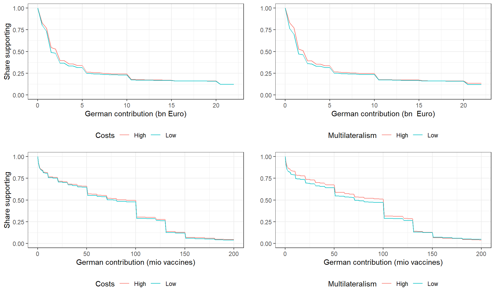
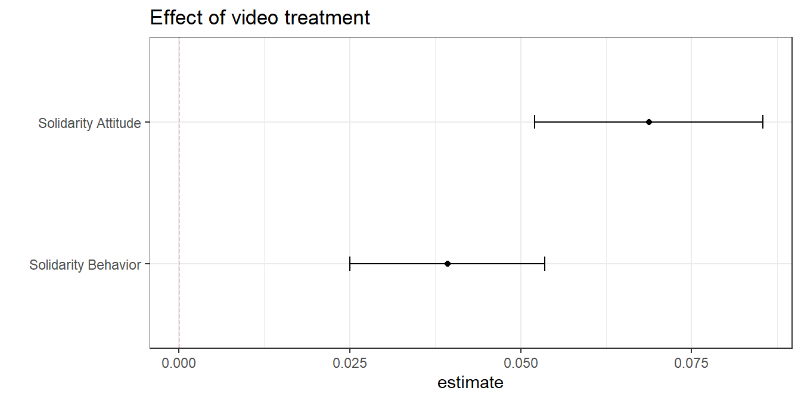
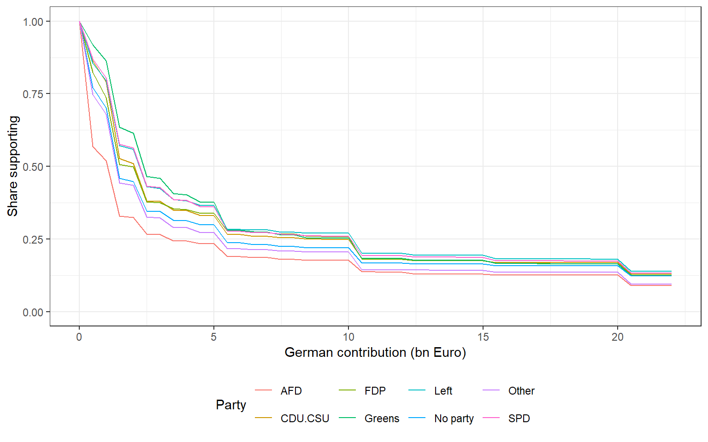
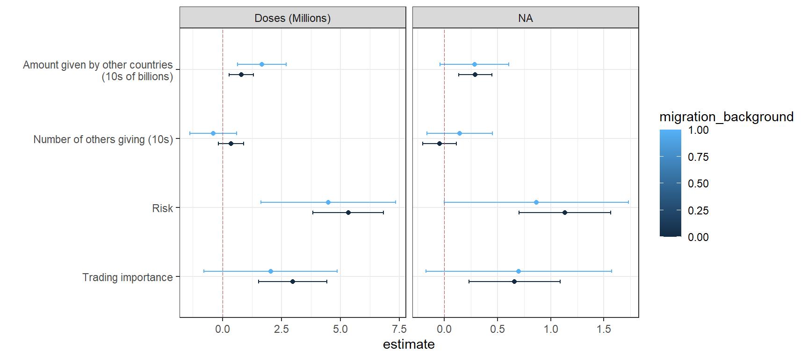
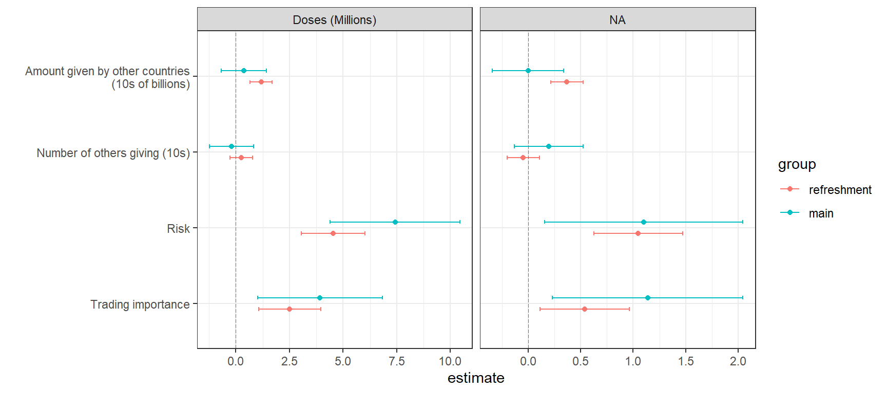

library(rep1371journalpone0278337)
library(dplyr)
library(ggplot2)
library(egg)
library(estimatr)
library(bbmle)
library(broom)
library(modelsummary)
library(kableExtra)
# Set TRUE to fit tables live on render (~minutes). FALSE uses precomputed
# artifacts from build_report() (fast; default for pkgdown).
re_run_slow_analyses <- FALSE
ns <- asNamespace("rep1371journalpone0278337")
show_table_artifact <- ns$show_table_artifact
clean_replication_source <- ns$clean_replication_source
show_make_source <- ns$show_make_sourceVaccine solidarity replication
This document reproduces the main tables and figures from the original analysis.Rmd by calling the package’s exported make_* and format_* functions (the same code path as run_replication()).
So when a chunk calls make_figure_1(wave4_conjoint)
The same outputs are available as one-liners (useful for tests and Shiny):
The tables and figures are generated by using the functions that are defined in the replication package. e.g.
make_table_1(wave4_conjoint)make_figure_1(wave4_conjoint)
But these also play nicely with functions in replicate_everything and so one could also run:
run_replication("fig_1")run_replication("tab_1")
The rest of the file runs these functions for each figure and table and also displays the underlying code.
Setup
Data
Data is drawn from the package
data(wave4_conjoint, package = "rep1371journalpone0278337")
data(wave2_survey, package = "rep1371journalpone0278337")
data(vignette_labels, package = "rep1371journalpone0278337")The source repository rebuilds df_4 and df_2 from raw CSV exports. This package ships prepared wave4_conjoint, wave2_survey, and vignette_labels. Rebuild from raw data with prep_data() when needed.
$wave4_rows
[1] 21050
$wave2_rows
[1] 13782Analysis: main results
Figure 1: Distribution of support for contributions of different sizes
Implementation: R/make_figure_1.R
wave4_conjoint |>
make_figure_1() |>
format_figure_1()
Show underlying code
R/make_figure_1.R
make_figure_1 <- function(data = wave4_conjoint) {
grids <- amount_grids()
s1 <- dplyr::bind_rows(
Low = support_curve(
data[data$risk_factor == "Low" & data$trading_factor == "Low", "cash_billions", drop = TRUE],
grids$cash
),
High = support_curve(
data[data$risk_factor == "High" & data$trading_factor == "High", "cash_billions", drop = TRUE],
grids$cash
),
.id = "Costs"
)
s2 <- dplyr::bind_rows(
Low = support_curve(
data[data$deal == "No deal", "cash_billions", drop = TRUE],
grids$cash
),
High = support_curve(
data[data$deal == "40 give 40 bn", "cash_billions", drop = TRUE],
grids$cash
),
.id = "Multilateralism"
)
s3 <- dplyr::bind_rows(
Low = support_curve(
data[data$risk_factor == "Low" & data$trading_factor == "Low", "doses", drop = TRUE],
grids$vaccines
),
High = support_curve(
data[data$risk_factor == "Low" & data$trading_factor == "High", "doses", drop = TRUE],
grids$vaccines
),
.id = "Costs"
)
s4 <- dplyr::bind_rows(
Low = support_curve(
data[data$deal == "No deal", "doses", drop = TRUE],
grids$vaccines
),
High = support_curve(
data[data$deal == "40 give 40 bn", "doses", drop = TRUE],
grids$vaccines
),
.id = "Multilateralism"
)
egg::ggarrange(
ggplot2::ggplot(s1, ggplot2::aes(.data$amounts, .data$support, color = .data$Costs)) +
ggplot2::geom_line() + ggplot2::ylim(0, 1) + ggplot2::theme_bw() +
ggplot2::xlab("German contribution (bn Euro)") + ggplot2::ylab("Share supporting") +
ggplot2::theme(legend.position = "bottom"),
ggplot2::ggplot(s2, ggplot2::aes(.data$amounts, .data$support, color = .data$Multilateralism)) +
ggplot2::geom_line() + ggplot2::ylim(0, 1) + ggplot2::theme_bw() +
ggplot2::xlab("German contribution (bn Euro)") + ggplot2::ylab("Share supporting") +
ggplot2::theme(legend.position = "bottom") + ggplot2::ylab(""),
ggplot2::ggplot(s3, ggplot2::aes(.data$amounts, .data$support, color = .data$Costs)) +
ggplot2::geom_line() + ggplot2::ylim(0, 1) + ggplot2::theme_bw() +
ggplot2::xlab("German contribution (mio vaccines)") + ggplot2::ylab("Share supporting") +
ggplot2::theme(legend.position = "bottom"),
ggplot2::ggplot(s4, ggplot2::aes(.data$amounts, .data$support, color = .data$Multilateralism)) +
ggplot2::geom_line() + ggplot2::ylim(0, 1) + ggplot2::theme_bw() +
ggplot2::xlab("German contribution (mio vaccines)") + ggplot2::ylab("Share supporting") +
ggplot2::theme(legend.position = "bottom") + ggplot2::ylab(""),
nrow = 2,
ncol = 2
)
}Figure 2: Marginal effects of conditions
Implementation: R/make_figure_2.R
The average proposal is 8.67 billion Euros and 78 million doses. The median proposal is 2 billion Euros and 90 million doses.
wave4_conjoint |>
make_figure_2() |>
format_figure_2()
Show underlying code
R/make_figure_2.R
make_figure_2 <- function(data = wave4_conjoint) {
plot_marginal_effects(fit_marginal_effects(data))
}Figure 3: Effect of video treatment on individual solidarity
Implementation: R/make_figure_3.R
wave2_survey |>
make_figure_3() |>
format_figure_3()
Show underlying code
R/make_figure_3.R
make_figure_3 <- function(data = wave2_survey) {
outcomes <- c("solidarity_behaviour", "solidarity_attitude")
outcome_labels <- c("Solidarity Behavior", "Solidarity Attitude")
models_basic <- stats::setNames(
lapply(outcomes, function(y) {
estimatr::lm_robust(
stats::as.formula(paste(y, "~ treatment_video")),
data = data
)
}),
outcomes
)
dplyr::bind_rows(lapply(models_basic, broom::tidy), .id = "outcome") |>
dplyr::filter(.data$term != "(Intercept)") |>
dplyr::mutate(outcome = factor(.data$outcome, outcomes, outcome_labels)) |>
ggplot2::ggplot(ggplot2::aes(.data$estimate, .data$outcome)) +
ggplot2::geom_point() +
ggplot2::geom_errorbar(
ggplot2::aes(xmin = .data$conf.low, xmax = .data$conf.high),
width = 0.1
) +
ggplot2::geom_vline(
xintercept = 0,
linetype = "longdash",
lwd = 0.35,
colour = "#B55555"
) +
ggplot2::theme_bw() +
ggplot2::ggtitle("Effect of video treatment") +
ggplot2::ylab("")
}Additional Results
Figure 4: Levels of support by party
Implementation: R/make_figure_4.R
wave4_conjoint |>
make_figure_4() |>
format_figure_4()
Show underlying code
R/make_figure_4.R
make_figure_4 <- function(data = wave4_conjoint) {
grids <- amount_grids()
sp <- lapply(unique(data$party), function(p) {
support_curve(
data[data$party == p, "cash_billions", drop = TRUE],
grids$cash
)
})
names(sp) <- unique(data$party)
sp <- dplyr::bind_rows(sp, .id = "Party")
ggplot2::ggplot(sp, ggplot2::aes(.data$amounts, .data$support, color = .data$Party)) +
ggplot2::geom_line() +
ggplot2::ylim(0, 1) +
ggplot2::theme_bw() +
ggplot2::xlab("German contribution (bn Euro)") +
ggplot2::ylab("Share supporting") +
ggplot2::theme(legend.position = "bottom")
}Figure 5: Levels of support by migration background
Implementation: R/make_figure_5.R
wave4_conjoint |>
make_figure_5() |>
format_figure_5()
Show underlying code
R/make_figure_5.R
make_figure_5 <- function(data = wave4_conjoint) {
grids <- amount_grids()
sm <- lapply(0:1, function(m) {
support_curve(
data[data$migration_background == m, "cash_billions", drop = TRUE],
grids$cash
)
})
names(sm) <- c("Non migrant", "Migrant")
sm <- dplyr::bind_rows(sm, .id = "Migration_background")
ggplot2::ggplot(
sm,
ggplot2::aes(.data$amounts, .data$support, color = .data$Migration_background)
) +
ggplot2::geom_line() +
ggplot2::ylim(0, 1) +
ggplot2::theme_bw() +
ggplot2::xlab("German contribution (bn Euro)") +
ggplot2::ylab("Share supporting") +
ggplot2::theme(legend.position = "bottom")
}Figure 6: Marginal effects of conditions by party
Implementation: R/make_figure_6.R
wave4_conjoint |>
make_figure_6() |>
format_figure_6()
Show underlying code
R/make_figure_6.R
make_figure_6 <- function(data = wave4_conjoint) {
plot_marginal_effects(
fit_marginal_effects_by(data, "party"),
group_var = "party",
flip_axes = TRUE
)
}Figure 7: Marginal effects of conditions by migration background
Implementation: R/make_figure_7.R
wave4_conjoint |>
make_figure_7() |>
format_figure_7()
Show underlying code
R/make_figure_7.R
make_figure_7 <- function(data = wave4_conjoint) {
plot_marginal_effects(
fit_marginal_effects_by(data, "migration_background"),
group_var = "migration_background",
flip_axes = TRUE
)
}Figure 8: Results refreshment sample
Implementation: R/make_figure_8.R
wave4_conjoint |>
make_figure_8() |>
format_figure_8()
Show underlying code
R/make_figure_8.R
make_figure_8 <- function(data = wave4_conjoint) {
results <- fit_marginal_effects_by(data, "group")
results$group <- factor(
results$group,
levels = c(4, 5),
labels = c("refreshment", "main")
)
plot_marginal_effects(
results,
group_var = "group",
flip_axes = TRUE
)
}Table 1: Structural analysis
Implementation: R/make_table_1.R
We assume
\[u = (a + bT + cR) \log(Y + x) - x^2 - g(x - ky)^2\]
where \(T\) is trading importance, \(R\) is health risk, \(Y\) is total amount given by other countries, and \(y\) is average amount given by other countries. The fit is slow (~1–2 minutes). With re_run_slow_analyses <- FALSE (default), the table below loads a precomputed artifact; set the switch to TRUE in Setup to run live on render.
Code
wave4_conjoint |>
make_table_1() |>
format_table_1() |>
knitr::asis_output()No precomputed artifact for tab_1. Set re_run_slow_analyses <- TRUE in setup, or run build_report() before rendering.
Show underlying code
R/make_table_1.R
make_table_1 <- function(data = wave4_conjoint) {
df_4 <- dplyr::mutate(data, x = .data$cash_billions)
LL <- function(a = 1, b = 1, c = 1, g = 1, k = 1, sigma = 1) {
R <- mapply(
structural_lik_x,
df_4$x,
MoreArgs = list(
sigma = sigma,
a = a,
b = b,
c = c,
g = g,
k = k,
ZT = df_4$trading_importance,
ZR = df_4$risk,
ZY = df_4$others_giving,
Zy = df_4$others_average
)
)
-sum(log(R))
}
fit <- bbmle::mle2(
LL,
optimizer = "nlminb",
start = list(a = 240, b = -11, c = 41, g = 0.8, k = 4, sigma = 16),
lower = list(a = 0, b = -20, c = -60, g = 0.01, k = -10, sigma = 0.02),
upper = list(a = 400, b = 20, c = 60, g = 5, k = 10, sigma = 30)
)
out <- as.data.frame(bbmle::coef(bbmle::summary(fit)))
names(out) <- c("estimate", "std.error", "statistic", "p.value")
out |>
dplyr::mutate(parameter = c("\u03b1", "\u03b2", "\u03b4", "\u03b3", "\u03ba", "\u03c3")) |>
dplyr::relocate(.data$parameter) |>
dplyr::mutate(
conf.low = .data$estimate - 1.96 * .data$std.error,
conf.high = .data$estimate + 1.96 * .data$std.error
) |>
dplyr::mutate(dplyr::across(where(is.numeric), ~ round(.x, 2)))
}Table 2: Wave 2 conjoint (additional analyses)
Implementation: R/make_table_2.R
Code
make_table_2(wave2_survey, vignette_labels) |>
format_table_2() |>
knitr::asis_output()No precomputed artifact for tab_2. Set re_run_slow_analyses <- TRUE in setup, or run build_report() before rendering.
Show underlying code
R/make_table_2.R
make_table_2 <- function(survey = wave2_survey, labels = vignette_labels) {
conjoints_norm <- prep_data_tab_2(survey, labels)
models_treatments <- list(
rating = estimatr::lm_robust(
rating ~ treatment_video * vig_doses + treatment_video * vig_dose_share +
treatment_video * vig_countries + treatment_video * vig_benefit_economic +
treatment_video * vig_benefit_health,
data = conjoints_norm
),
choice = estimatr::lm_robust(
outcome ~ treatment_video * vig_doses + treatment_video * vig_dose_share +
treatment_video * vig_countries + treatment_video * vig_benefit_economic +
treatment_video * vig_benefit_health,
data = conjoints_norm
)
)
coef_map <- c(
"(Intercept)" = "Constant (Average rating)",
"treatment_video" = "Video effect (given ungenerous agreement)",
"vig_doses" = "German contribution",
"vig_dose_share" = "German share",
"vig_countries" = "Number of donors",
"vig_benefit_economic" = "Economic benefits",
"vig_benefit_health" = "Health benefits",
"treatment_video:vig_doses" = "Video * Contribution",
"treatment_video:vig_dose_share" = "Video * Share",
"treatment_video:vig_countries" = "Video * Donors",
"treatment_video:vig_benefit_economic" = "Video * Economics",
"treatment_video:vig_benefit_health" = "Video * Health"
)
modelsummary::modelsummary(
models_treatments,
coef_map = coef_map,
estimate = "{estimate}{stars}",
statistic = "({std.error})",
output = "kableExtra",
stars = c("***" = 0.001, "**" = 0.01, "*" = 0.05),
gof_map = c("r.squared", "adj.r.squared", "nobs", "rmse"),
title = "Effects of treatment on drivers of support for agreements.",
notes = "*** p<0.001; ** p<0.01; * p<0.05",
colnames = c("rating", "choice")
)
}Session info
sessionInfo()R version 4.6.0 (2026-04-24 ucrt)
Platform: x86_64-w64-mingw32/x64
Running under: Windows 11 x64 (build 26200)
Matrix products: default
LAPACK version 3.12.1
locale:
[1] LC_COLLATE=English_United States.utf8
[2] LC_CTYPE=English_United States.utf8
[3] LC_MONETARY=English_United States.utf8
[4] LC_NUMERIC=C
[5] LC_TIME=English_United States.utf8
time zone: Europe/Berlin
tzcode source: internal
attached base packages:
[1] stats4 stats graphics grDevices utils datasets methods
[8] base
other attached packages:
[1] kableExtra_1.4.0 modelsummary_2.6.0
[3] broom_1.0.13 bbmle_1.0.25.1
[5] estimatr_1.0.6 egg_0.4.5
[7] gridExtra_2.3 ggplot2_4.0.3
[9] dplyr_1.2.1 rep1371journalpone0278337_0.1.0
loaded via a namespace (and not attached):
[1] generics_0.1.4 tidyr_1.3.2 xml2_1.5.2
[4] stringi_1.8.7 lattice_0.22-9 digest_0.6.39
[7] magrittr_2.0.5 evaluate_1.0.5 grid_4.6.0
[10] RColorBrewer_1.1-3 mvtnorm_1.4-1 fastmap_1.2.0
[13] jsonlite_2.0.0 Matrix_1.7-5 backports_1.5.1
[16] Formula_1.2-5 httr_1.4.8 purrr_1.2.2
[19] viridisLite_0.4.3 scales_1.4.0 codetools_0.2-20
[22] textshaping_1.0.5 numDeriv_2016.8-1.1 cli_3.6.6
[25] rlang_1.2.0 texreg_1.39.5 withr_3.0.2
[28] yaml_2.3.12 otel_0.2.0 tools_4.6.0
[31] bdsmatrix_1.3-7 vctrs_0.7.3 R6_2.6.1
[34] lifecycle_1.0.5 stringr_1.6.0 htmlwidgets_1.6.4
[37] MASS_7.3-65 pkgconfig_2.0.3 pillar_1.11.1
[40] gtable_0.3.6 data.table_1.18.4 glue_1.8.1
[43] Rcpp_1.1.1-1.1 systemfonts_1.3.2 xfun_0.58
[46] tibble_3.3.1 tidyselect_1.2.1 rstudioapi_0.19.0
[49] knitr_1.51 farver_2.1.2 tables_0.9.35
[52] htmltools_0.5.9 svglite_2.2.2 rmarkdown_2.31
[55] compiler_4.6.0 S7_0.2.2